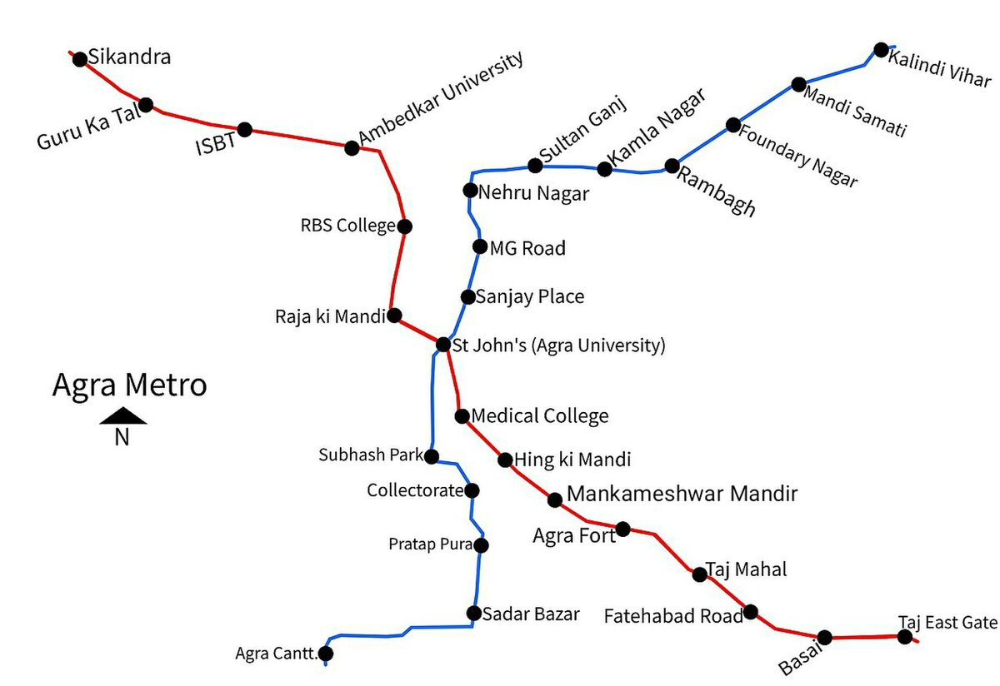
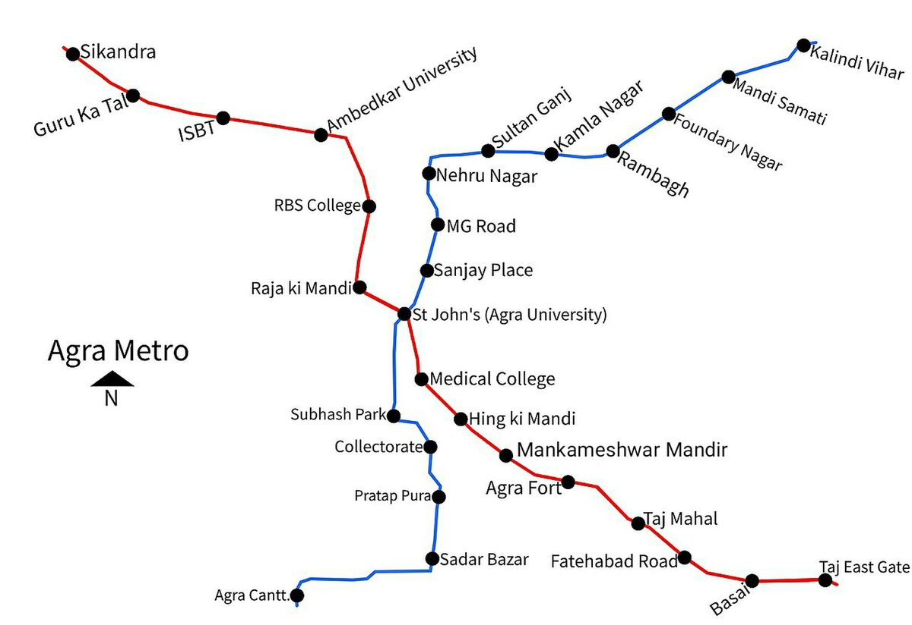

Welcome to the Agra Metro website, your gateway to seamless
travel across the majestic city of Agra! As you embark on your
journey through this digital portal, allow us to introduce you
to the marvels of our metropolitan transportation system.
At the heart of India's cultural heritage, Agra Metro stands as
a symbol of modernity intertwined with tradition. Our metro
network is designed to cater to the diverse needs of commuters,
tourists, and residents alike, offering a swift, safe,
and sustainable mode of transportation amidst the
bustling streets and iconic monuments of Agra.
Join us as we embark on this journey towards a brighter, more
accessible future for Agra. Welcome aboard the Agra Metro
– where tradition meets innovation, and every ride is a
celebration of the city's rich tapestry of culture and heritage.
By creating a comprehensive and user-friendly website,
the Agra Metro project aims to not only enhance
public awareness and engagement but also contribute to
the sustainable development and modernization of
transportation infrastructure in the historic city of Agra.